일반기계기사 (2021-05-15 기출문제)
1과목: 재료역학
1. 5cm×4cm 블록이 x축을 따라 0.⑤cm 만큼 인장되었다. y방향으로 수축되는 변형률(εy)은? (단, 포아송 비(ν)는 0.3 이다.)
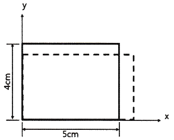
- 0.000015
- 0.0015
- 0.003
- 0.03
(정답률: 65%)

2. 길이 15m, 봉의 지름 10mm인 강봉에 P = 8 kN을 작용시킬 때 이 봉의 길이방향 변형량은 약 몇 mm인가? (단, 이 재료의 세로탄성계수는 210 GPa 이다.)
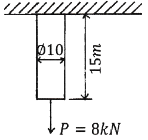
- 5.2
- 6.4
- 7.3
- 8.5
(정답률: 78%)
3. 반경 r, 내압 P, 두께 t인 얇은 원통형 압력용기의 면내에서 발생되는 최대 전단응력(2차원 응력 상태에서의 최대 전단응력)의 크기는?
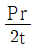
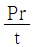
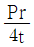
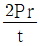
(정답률: 39%)
4. 다음과 같이 3개의 링크를 핀을 이용하여 연결하였다. 2000N의 하중 P가 작용할 경우 핀에 작용되는 전단응력은 약 몇 MPa 인가? (단, 핀의 지름은 1cm 이다.)
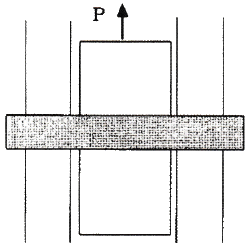
- 12.73
- 13.24
- 15.63
- 16.56
(정답률: 70%)
5. 그림과 같이 평면응력 조건하에 최대 주응력은 몇 kPa 인가? (단, σx = 400kPa, σy = -400kPa, τxy = 300kPa 이다.)
- 400
- 500
- 600
- 700
(정답률: 72%)
6. 전체 길이에 걸쳐서 균일 분포하중 200N/m가 작용하는 단순 지지보의 최대 굽힘응력은 몇 MPa 인가? (단, 폭×높이 = 3cm×4cm인 직사각형 단면이고, 보의 길이는 2m 이다. 또한 보의 지점은 양 끝단에 있다.)
- 12.5
- 25.0
- 14.9
- 29.8
(정답률: 59%)
7. 다음 보에 발생하는 최대 굽힘 모멘트는?
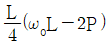
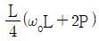
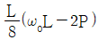
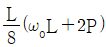
(정답률: 59%)
8. 바깥지름이 46mm인 속이 빈 축이 120kW의 동력을 전달하는데 이 때의 각속도는 40rev/s 이다. 이 축의 허용비틀림응력이 80 MPa 일 때, 안지름은 약 몇 mm 이하이어야 하는가?
- 29.8
- 41.8
- 36.8
- 48.8
(정답률: 58%)
9. 지름 200mm인 축이 120rpm으로 회전하고 있다. 2m 떨어진 두 단면에서 측정한 비틀림 각이 1/15 rad 이었다면 이 축에 작용하고 있는 비틀림 모멘트는 약 몇 kN·m인가? (단, 가로탄성계수는 80 GPa 이다.)
- 418.9
- 356.6
- 3⑤.7
- 286.8
(정답률: 69%)
10. 그림과 같은 단면에서 가로방향 도심축에 대한 단면 2차모멘트는 약 몇 mm4 인가?
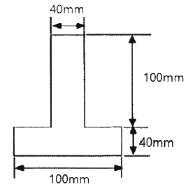
- 10.67 × 106
- 13.67 × 106
- 20.67 × 106
- 23.67 × 106
(정답률: 48%)
11. 직사각형 단면의 단주에 150 kN 하중이 중심에서 1m만큼 편심되어 작용할 때 이 부재 AC에서 생기는 최대 인장응력은 몇 kPa 인가?
- 25
- 50
- 87.5
- 100
(정답률: 38%)
12. 그림과 같이 전체 길이가 3L인 외팔보에 하중 P가 B점과 C점에 작용할 때 자유단 B에서의 처짐량은? (단, 보의 굽힘강성 EI는 일정하고, 자중은 무시한다.)
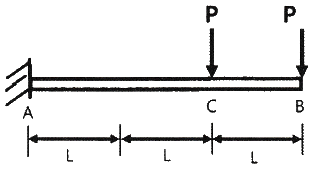
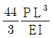
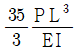
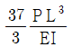
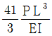
(정답률: 45%)
13. 지름 50mm인 중실축 ABC가 A에서 모터에 의해 구동된다. 모터는 600rpm으로 50kW의 동력을 전달한다. 기계를 구동하기 위해서 기어 B는 35kW, 기어 C는 15kW를 필요로 한다. 축 ABC에 발생하는 최대 전단응력은 몇 MPa 인가?
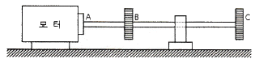
- 9.73
- 22.7
- 32.4
- 64.8
(정답률: 56%)
14. 그림과 같이 직사각형 단면의 목재 외팔보에 집중하중 P가 C점에 작용하고 있다. 목재의 허용압축응력을 8MPa, 끝단 B점에서의 허용 처짐량을 23.9mm라고 할 때 허용압축응력과 허용 처짐량을 모두 고려하여 이 목재에 가할 수 있는 집중하중 P의 최대값은 약 몇 kN인가? (단, 목재의 세로탄성계수는 12GPa, 단면2차모멘트는 1022×10-6 m4, 단면계수는 4.601×10-3 m3 이다.)
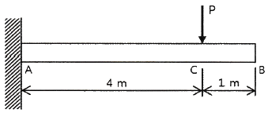
- 7.8
- 8.5
- 9.2
- 10.0
(정답률: 47%)
15. 그림과 같은 단순보의 중앙점(C)에서 굽힘모멘트는?
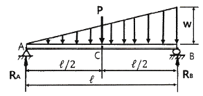
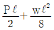
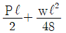
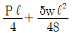
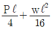
(정답률: 40%)
16. 허용인장강도가 400MPa 인 연강봉에 30 kN의 축방향 인장하중이 가해질 경우 이 강봉의 지름은 약 몇 cm 인가? (단, 안전율은 5 이다.)
- 2.69
- 2.93
- 2.19
- 3.33
(정답률: 70%)
17. 그림과 같이 길이가 2L인 양단고정보의 중앙에 집중하중이 아래로 가해지고 있다. 이때 중앙에서 모멘트 M이 발생하였다면 이 집중하중(P)의 크기는 어떻게 표현되는가?
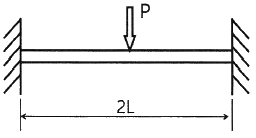
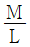
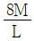
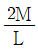
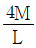
(정답률: 38%)
18. 단면적이 5cm2, 길이가 60cm인 연강봉을 천장에 매달고 30℃에서 0℃로 냉각시킬 때 길이의 변화를 없게 하려면 봉의 끝에 몇 kN의 추를 달아야 하는가? (단, 세로탄성계수 200GPa, 열팽창계수 a=12×10-6/℃ 이고, 봉의 자중은 무시한다.)
- 60
- 36
- 30
- 24
(정답률: 69%)
19. 그림과 같이 균일분포 하중을 받는 외팔보에 대해 굽힘에 의한 탄성변형에너지는? (단, 굽힘강성 EI는 일정하다.)
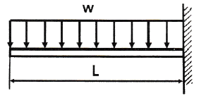
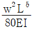
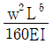
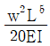
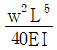
(정답률: 54%)
20. 알루미늄봉이 그림과 같이 축하중 받고 있다. BC간에 작용하고 있는 하중의 크기는?
- 2P
- 3P
- 4P
- 8P
(정답률: 63%)
2과목: 기계열역학
21. 압력 100kPa, 온도 20℃인 일정량의 이상기체가 있다. 압력을 일정하게 유지하면서 부피가 처음 부피의 2배가 되었을 때 기체의 온도는 몇 ℃가 되는가?
- 148
- 256
- 313
- 586
(정답률: 64%)
22. 열역학 제2법칙과 관계된 설명으로 가장 옳은 것은?
- 과정(상태변화)의 방향성을 제시한다.
- 열역학적 에너지의 양을 결정한다.
- 열역학적 에너지의 종류를 판단한다.
- 과정에서 발생한 총 일의 양을 결정한다.
(정답률: 68%)
23. 어느 왕복동 내연기관에서 실린더 안지름이 6.8cm, 행정이 8cm 일 때 평균유효압력은 1200kPa 이다. 이 기관의 1행정당 유효 일은 약 몇 kJ 인가?
- 0.09
- 0.15
- 0.35
- 0.48
(정답률: 56%)
24. 오토 사이클로 작동되는 기관에서 실린더의 극간 체적(clearance volume)이 행정 체적(stroke volume)의 15%라고 하면 이론 열효율은 약 얼마인가? (단, 비열비 k = 1.4 이다.)
- 39.3%
- 45.2%
- 50.6%
- 55.7%
(정답률: 52%)
25. 질량이 5kg인 강제 용기 속에 물이 20L 들어있다. 용기와 물이 24℃인 상태에서 이 속에 질량이 5kg이고 온도가 180℃인 어떤 물체를 넣었더니 일정 시간 후 온도가 35℃가 되면서 열평형에 도달하였다. 이 때 이 물체의 비열은 약 몇 kJ/(kg·K)인가? (단, 물의 비열은 4.2kJ/(kg·K), 강의 비열은 0.46kJ/(kg·K) 이다.)
- 0.88
- 1.12
- 1.31
- 1.86
(정답률: 53%)
26. 보일러, 터빈, 응축기, 펌프로 구성되어 있는 증기원동소가 있다. 보일러에서 2500 kW의 열이 발생하고 터빈에서 550kW의 일을 발생시킨다. 또한, 펌프를 구동하는데 20kW의 동력이 추가로 소모된다면 응축기에서의 방열량은 약 몇 kW인가?
- 980
- 1930
- 1970
- 3070
(정답률: 36%)
27. 실린더에 밀폐된 8kg의 공기가 그림과 같이 압력 P1 = 800kPa, 체적 V1 = 0.27m3에서 P2 = 350kPa, V2 = 0.80m3 으로 직선 변화하였다. 이 과정에서 공기가 한 일은 약 몇 kJ 인가?
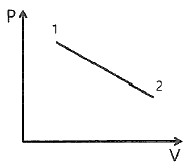
- 3⑤
- 334
- 362
- 390
(정답률: 65%)
28. 어떤 열기관이 550K의 고열원으로부터 20kJ의 열량을 공급받아 250K의 저열원에 14KJ의 열량을 방출할 때, 이 사이클의 Clausius 적분값과 가역, 비가역 여부의 설명으로 옳은 것은?
- Clausius 적분값은 –0.0196kJ/K 이고 가역사이클이다.
- Clausius 적분값은 –0.0196kJ/K 이고 비가역사이클이다.
- Clausius 적분값은 0.0196kJ/K 이고 가역사이클이다.
- Clausius 적분값은 0.0196kJ/K 이고 비가역사이클이다.
(정답률: 60%)
29. 이상적인 오토사이클의 열효율이 56.5% 이라면 압축비가 약 얼마인가? (단, 작동 유체의 비열비는 1.4로 일정하다.)
- 7.5
- 8.0
- 9.0
- 9.5
(정답률: 66%)
30. 4kg의 공기를 온도 15℃에서 일정 체적으로 가열하여 엔트로피가 3.35 kJ/K 증가하였다. 이때 온도는 약 몇 K인가? (단, 공기의 정적비열은 0.717 kJ/(kg·K) 이다.)
- 927
- 337
- 533
- 483
(정답률: 57%)
31. 상태 1에서 경로 A를 따라 상태 2로 변화하고 경로 B를 따라 다시 상태 1로 돌아오는 가역사이클이 있다. 아래의 사이클에 대한 설명으로 틀린 것은?
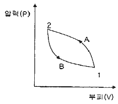
- 사이클 과정 동안 시스템의 내부에너지 변화량은 0 이다.
- 사이클 과정 동안 시스템은 외부로부터 순(net) 일을 받았다.
- 사이클 과정 동안 시스템의 내부에서 외부로 순(net) 열이 전달되었다.
- 이 그림으로 사이클 과정 동안 총 엔트로피 변화량을 알 수 없다.
(정답률: 51%)
32. 다음 4가지 경우에서 ( ) 안의 물질이 보유한 엔트로피가 증가한 경우는?
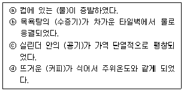
- ⓐ
- ⓑ
- ⓒ
- ⓓ
(정답률: 64%)
33. 기체상수가 0.462 kJ/(kg·K)인 수증기를 이상기체로 간주할 때 정압비열(kJ/(kg·K))은 약 얼마인가? (단, 이 수증기의 비열비는 1.33 이다.)
- 1.86
- 1.54
- 0.64
- 0.44
(정답률: 65%)
34. 완전히 단열된 실린더 안의 공기가 피스톤을 밀어 외부로 일을 하였다. 이 때 외부로 행한 일의 양과 동일한 값(절대값 기준)을 가지는 것은?
- 공기의 엔탈피 변화량
- 공기의 온도 변화량
- 공기의 엔트로피 변화량
- 공기의 내부에너지 변화량
(정답률: 56%)
35. 시스템 내의 임의의 이상기체 1kg이 채워져 있다. 이 기체의 정압비열은 1.0kJ/(kg·K) 이고, 초기 온도가 50℃인 상태에서 323kJ의 열량을 가하여 팽창시킬 때 변경 후 체적은 변경 전 체적의 약 몇 배가 되는가? (단, 정압과정으로 팽창한다.)
- 1.5배
- 2배
- 2.5배
- 3배
(정답률: 57%)
36. 그림과 같은 Rankine 사이클의 열효율은 약 얼마인가? (단, h는 엔탈피, s는 엔트로피를 나타내며, h1 = 191.8 kJ/kg, h2 = 193.8 kJ/kg, h3 = 2799.5 kJ/kg, h4 = 2007.5 kJ/kg 이다.)
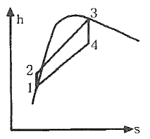
- 30.3%
- 36.7%
- 42.9%
- 48.1%
(정답률: 63%)
37. 냉동기 냉매의 일반적인 구비조건으로서 적합하지 않은 것은?
- 임계 온도가 높고, 응고 온도가 낮을 것
- 증발열이 작고, 증기의 비체적이 클 것
- 증기 및 액체의 점성(점성계수)이 작을 것
- 부식성이 없고, 안정성이 있을 것
(정답률: 65%)
38. 복사열을 방사하는 방사율과 면적이 같은 2개의 방열판이 있다. 각각의 온도가 A 방열판은 120℃, B 방열판은 80℃ 일 때 두 방열판의 복사 열전달량(QA/QB)비는?
- 1.08
- 1.22
- 1.54
- 2.42
(정답률: 48%)
39. 카르노사이클로 작동되는 열기관이 200kJ의 열을 200℃에서 공급받아 20℃에서 방출한다면 이 기관의 일은 약 얼마인가?
- 38kJ
- 54kJ
- 63kJ
- 76kJ
(정답률: 63%)
40. 유리창을 통해 실내에서 실외로 열전달이 일어난다. 이때 열전달량은 약 몇 W 인가? (단, 대류열전달계수는 50W/(m2·K), 유리창 표면온도는 25℃, 외기온도는 10℃, 유리창면적은 2m2 이다.)
- 150
- 500
- 1500
- 5000
(정답률: 64%)
3과목: 기계유체역학
41. 지름 D인 구가 점성계수 μ인 유체 속에서, 관성을 무시할 수 있을 정도로 느린 속도 V로 움직일 때 받는 힘 F를 D, μ, V의 함수로 가정하여 차원해석 하였을 때 얻을 수 있는 식은?
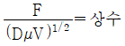
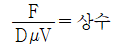
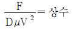
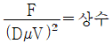
(정답률: 57%)
42. 매끄러운 원관에서 물의 속도가 V일 때 압력강하가 △p1이었고, 이때 완전한 난류유동이 발생되었다. 속도를 2V로 하여 실험을 하였다면 압력강하는 얼마가 되는가?
- △p1
- 2△p1
- 4△p1
- 8△p1
(정답률: 46%)
43. 5℃의 물[점성계수 1.5×10-3 kg/(m·s)]이 안지름 0.25cm, 길이 10m인 수평관 내부를 1m/s 로 흐른다. 이 때 레이놀즈수는 얼마인가?
- 166.7
- 600
- 1666.7
- 6000
(정답률: 63%)
44. 비압축성 유동에 대한 Navier-Stokes 방정식에서 나타나지 않는 힘은?
- 체적력(중력)
- 압력
- 점성력
- 표면장력
(정답률: 54%)
45. 어떤 물체의 속도가 초기 속도의 2배가 되었을 때 항력계수가 초기 항력계수의 1/2로 줄었다. 초기에 물체가 받는 저항력이 D라고 할 때 변화된 저항력은 얼마가 되는가?
- 2D
- 4D
- 1/2 D
- √2 D
(정답률: 58%)
46. 한 변이 2m인 위가 열려있는 정육면체 통에 물을 가득 담아 수평방향으로 9.8m/s2의 가속도로 잡아당겼을 때 통에 남아 있는 물의 양은 약 몇 m3인가?
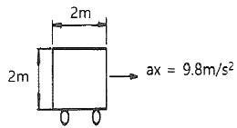
- 8
- 4
- 2
- 1
(정답률: 52%)
47. 다음 중 Hagen-Poiseuille 법칙을 이용한 세관식 점도계는?
- 맥미셸(MacMichael) 점도계
- 세이볼트(Saybolt) 점도계
- 낙구식 점도계
- 스토머(Stormer) 점도계
(정답률: 36%)
48. 평판 위를 지나는 경계층 유동에서 경계층 두께가 δ인 경계층 내 속도 u가
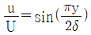
로 주어진다. 여기서 y는 평판까지 거리, U는 주류속도이다. 이 때 경계층 배제두께(boundary layer displacement thickness) δ*와 δ의 비 δ*/δ 는 약 얼마인가?- 0.333
- 0.363
- 0.500
- 0.667
(정답률: 31%)
49. 2차원 직각좌표계(x, y)에서 유동함수(stream function,
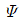
)가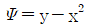
인 정상 유동이 있다. 다음 보기 중 속도의 크기가 √5인 점(x, y)을 모두 고르면?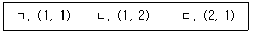
- ㄱ
- ㄷ
- ㄱ, ㄴ
- ㄴ, ㄷ
(정답률: 40%)
50. 그림과 같은 수문에서 멈춤장치 A가 받는 힘은 약 몇 kN 인가? (단, 수문의 폭은 3m이고, 수은의 비중은 13.6 이다.)
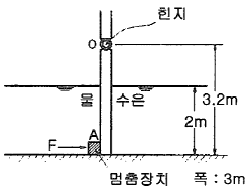
- 37
- 510
- 586
- 879
(정답률: 36%)
51. 그림과 같이 바닥부 단면적이 1m2인 탱크에 설치된 노즐에서 수면과 노즐 중심부 사이 높이가 1m인 경우 유량을 Q라고 한다. 이유량을 2배로 하기 위해서는 수면 상에 약 몇 kg 정도의 피스톤을 놓아야 하는가?
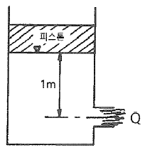
- 1000
- 2000
- 3000
- 4000
(정답률: 27%)
52. 밀도가 ρ인 액체와 접촉하고 있는 기체 사이의 표면장력이 σ라고 할 때 그림과 같은 지름 d의 원통 모세관에서 액주의 높이 h를 구하는 식은? (단, g는 중력가속도이다.)
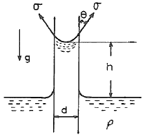
(정답률: 55%)
53. 수력구배선(hydrauilc grade line)에 대한 설명으로 옳은 것은?
- 에너지선보다 위에 있어야 한다.
- 항상 수평선이다.
- 위치수두와 속도수두의 합을 나타내며 주로 에너지선 아래에 있다.
- 위치수두와 압력수두의 합을 나타내며 주로 에너지선 아래에 있다.
(정답률: 56%)
54. 그림과 같이 비중이 0.83인 기름이 12m/s의 속도로 수직 고정평판에 직각으로 부딪치고 있다. 판에 작용되는 힘 F는 약 몇 N인가?
- 23.5
- 28.9
- 288.6
- 234.7
(정답률: 61%)
55. 비중이 0.85이고 동점성계수가 3×10-4 m2/s인 기름이 안지름 10cm 원관 내를 20L/s로 흐른다. 이 원관 100m 길이에서의 수두손실은 약 몇 m 인가?
- 16.6
- 24.9
- 49.8
- 82.1
(정답률: 49%)
56. 길이 100m의 배를 길이 5m인 모형으로 실험할 때, 실형이 40km/h로 움직이는 경우와 역학적 상사를 만족시키기 위한 모양의 속도는 약 몇 km/h 인가? (단, 점성마찰은 무시한다.)
- 4.66
- 8.94
- 12.96
- 18.42
(정답률: 60%)
57. 압력과 밀도를 각각 P, ρ라 할 때 의 차원은? (단, M, L, T는 각각 질량, 길이, 시간의 차원을 나타낸다.)
(정답률: 53%)
58. 단면적이 각각 10cm2와 20cm2인 관이 서로 연결되어 있다. 비압축성 유동이라 가정하면 20cm2 관속의 평균유속이 2.4m/s 일 때 10cm2 관내의 평균속도는 약 몇 m/s 인가?
- 4.8
- 1.2
- 9.6
- 2.4
(정답률: 61%)
59. 마노미터를 설치하여 액체탱크의 수압을 측정하려고 한다. 수은(비중=13.6) 액주의 높이차 H = 50cm 이면 A점에서의 계기압력은 약 얼마인가? (단, 액체의 밀도는 900 kg/m3 이다.)
- 63.9 kPa
- 4.2 kPa
- 63.9 Pa
- 4.2 Pa
(정답률: 57%)
60. 동점성계수가 10cm2/s 이고 비중이 1.2인 유체의 점성계수는 몇 Pa·s인가?
- 1.2
- 0.12
- 2.4
- 0.24
(정답률: 60%)
4과목: 기계재료 및 유압기기
61. Fe-C 평형상태도에 대한 설명으로 틀린 것은?
- 강의 A2변태선은 약 768℃이다.
- A1변태선을 공석선이라 하며, 약 723℃이다.
- A0변태점을 시멘타이트의 자기변태점이라 하며, 약 210℃ 이다.
- 공정점에서의 공정물을 펄라이트라 하며, 약 1490℃ 이다.
(정답률: 43%)
62. 금속을 냉간 가공하였을 때의 기계적·물리적 성질의 변화에 대한 설명으로 틀린 것은?
- 냉간 가공도가 증가할수록 강도는 증가한다.
- 냉간 가공도가 증가할수록 연신율은 증가한다.
- 냉간 가공이 진행됨에 따라 전기 전도율은 낮아진다.
- 냉간 가공이 진행됨에 따라 전기적 성질인 투자율은 감소한다.
(정답률: 56%)
63. 탄소강에 함유된 인(P)의 영향을 옳게 설명한 것은?
- 경도를 감소시킨다.
- 결정립을 미세화시킨다.
- 연신율을 증가시킨다.
- 상온 취성의 원인이 된다.
(정답률: 61%)
64. 그림과 같은 항온 열처리하여 마텐자이트와 베이나이트의 혼합조직을 얻는 열처리는?
- 담금질
- 패턴팅
- 마템퍼링
- 오스템퍼링
(정답률: 50%)
65. 강을 담금질하면 경도가 크고 메지므로, 인성을 부여하기 위하여 A1 변태점 이하의 온도에서 일정 시간 유지하였다가 냉각하는 열처리 방법은?
- 퀜칭(Quenching)
- 탬퍼링(Tempering)
- 어닐링(Annealing)
- 노멀라이징(Normalizing)
(정답률: 62%)
66. 스테인리스강의 조직계에 해당되지 않는 것은?
- 펄라이트계
- 페라이트계
- 마텐자이트계
- 오스테나이트계
(정답률: 42%)
67. 라우탈(Lautal) 합금의 주성분으로 옳은 것은?
- Al-Si
- Al-Mg
- Al-Cu-Si
- Al-Cu-Ni-Mg
(정답률: 56%)
68. 켈밋 합금(Kelmet alloy)의 주요 성분으로 옳은 것은?
- Pb-Sn
- Cu-Pb
- Sn-Sb
- Zn-Al
(정답률: 56%)
69. 열경화성 수지나 충전 강화수지(FRTP)사용되는 것으로 내열성, 내마모성, 내식성이 필요한 열간 금형용 재료는?
- STC3
- STS5
- STD61
- SM45C
(정답률: 40%)
70. 구리판, 알루미늄판 등 기타 연성의 판재를 가압 성형하여 변형 능력을 시험하는 시험법은?
- 커핑 시험
- 마멸 시험
- 압축 시험
- 크리프 시험
(정답률: 50%)
71. 다음 간략기호의 명칭은? (단, 스프링이 없는 경우이다.)
- 체크 밸브
- 스톱 밸브
- 일정 비율 감압 밸브
- 저압 우선형 셔틀 밸브
(정답률: 62%)
72. 토출량이 일정하지 않으며 주로 저압에서 사용하는 비용적형 펌프의 종류가 아닌 것은?
- 베인 펌프
- 원심 펌프
- 축류 펌프
- 혼류 펌프
(정답률: 51%)
73. 유압 실린더에서 오일에 의해 피스톤에 15MPa의 압력이 가해지고 피스톤 속도가 3.5cm/s 일 때 이 실린더에서 발생하는 동력은 약 몇 kW 인가? (단, 실린더 안지름은 100mm 이다.)
- 2.74
- 4.12
- 6.18
- 8.24
(정답률: 51%)
74. 다음 기호의 명칭은?
- 풋 밸브
- 감압 밸브
- 릴리프 밸브
- 디셀러레이션 밸브
(정답률: 64%)
75. 유압 및 유압 장치에 대한 설명으로 적절하지 않은 것은?
- 자동제어, 원격제어가 가능하다.
- 오일에 기포가 섞이거나 먼지, 이물질에 의해 고장이나 작동이 불량할 수 있다.
- 굴삭기와 같은 큰 힘을 필요로 하는 건설기계는 유압보다는 공압을 사용한다.
- 유압 장치는 공압 장치에 비해 복귀관과 같은 배관을 필요로 하므로 배관이 상대적으로 복잡해질 수 있다.
(정답률: 62%)
76. 유량 제어 밸브를 실린더 출구 측에 설치한 회로로서 실린더에서 유출되는 유량을 제어하며 피스톤 속도를 제어하는 회로는?
- 미터 인 회로
- 미터 아웃 회로
- 블리드 오프 회로
- 카운터 밸런스 회로
(정답률: 64%)
77. 패킹 재료로서 요구되는 성질로 적절하지 않은 것은?
- 내마모성이 있을 것
- 작동유에 대하여 적당한 저항성이 있을 것
- 온도, 압력의 변화에 충분히 견딜 수 있을 것
- 패킹이 유체와 접하므로 그 유체에 의해 연화되는 재질일 것
(정답률: 62%)
78. 유압펌프의 소음 및 진동이 크게 발생하는 이유로 적절하지 않은 것은?
- 흡입관 또는 필터가 막힌 경우
- 펌프의 설치 위치가 매우 높은 경우
- 토출 압력이 매우 높게 설정된 경우
- 흡입관의 직경이 매우 크거나 길이가 짧을 경우
(정답률: 52%)
79. 유량 제어 밸브에 속하는 것은?
- 스톱 밸브
- 릴리프 밸브
- 브레이크 밸브
- 카운터 밸런스 밸브
(정답률: 39%)
80. 오일 탱크의 구비 조건에 대한 설명으로 적절하지 않은 것은?
- 오일 탱크의 바닥면은 바닥에서 일정 간격 이상을 유지하는 것이 바람직하다.
- 오일 탱크는 스트레이너의 삽입이나 분리를 용이하게 할 수 있는 출입구를 만든다.
- 오일 탱크 내에 격판(방해판)은 오일의 순환거리를 짧게 하고 기포의 방출이나 오일의 냉각을 보존한다.
- 오일 탱크의 용량은 장치의 운전장치 중 장치내의 작동유가 복귀하여도 지장이 없을 만큼의 크기를 가져야 한다.
(정답률: 59%)
5과목: 기계제작법 및 기계동력학
81. 다음 물리량 중 스칼라(scalar) 양은?
- 속력(speed)
- 변위(displacement)
- 가속도(acceleration)
- 운동량(momentum)
(정답률: 52%)
82. 두 개의 블록이 정지 상태에서 움직이기 시작한다. 풀리와 로프 사이의 마칠이 없다고 가정하고, 블록 A와 수평면 간의 마찰계수를 0.25라고 할 때, 줄에 걸리는 장력은 약 몇 N 인가? (단, A 블록의 질량은 200kg, B 블록의 질량은 300kg 이다.)
- 1270
- 1470
- 4420
- 5890
(정답률: 33%)
83. 그림과 같이 길이(L)이 2.4m이고, 반지름(a)이 0.4m인 원통이 있다. 이 원통의 질량이 150kg일 때, 중심에서 y축 방향에 대한 질량관성모멘트(Iy)는 약 몇 kg·m2 인가?
- 12
- 36
- 78
- 120
(정답률: 23%)
84. 그림과 같은 시스템에서 질량 m=5kg이고 스프링 상수 k=20N/m 이며, 기진력 sin(wt) [N]이 작용하였다. 초기 조건 t=0 일 때 x(0)=0, 이면 시간 t일 때의 변위 x는?
(정답률: 23%)
85. 반지름이 1m인 바퀴가 60rpm 으로 미끄러지지 않고 굴러갈 때 바퀴의 운동에너지는 약 몇 J인가? (단, 바퀴의 질량은 10kg이고 바퀴는 얇은 두께의 원판형상이다.)
- 296
- 245
- 198
- 164
(정답률: 19%)
86. 질량 m은 탄성스프링으로 지지되어 있으며 그림과 같이 x = 0 일 때 자유낙하를 시작한다. x = 0 일 때 스프링의 변형량은 0 이며, 탄성스프링의 질량은 무시하고 스프링상수는 k이다. 질량 m의 속도가 최대가 될 때 탄성스프링의 변형량(x)은?
- 0
(정답률: 34%)
87. 질점이 시간 t에 대하여 다음과 같이 단순조화운동을 나타낼 때 이 운동의 주기는?
(정답률: 49%)
88. 그림과 같이 회전자의 질량은 30kg이고 회전반경은 200mm이다. 3600rpm으로 회전하고 있던 회전자가 정지하기까지 5.3분이 걸렸을 때 정지하는 동안 마찰에 의한 평균 모멘트의 크기는 약 몇 N·m인가?
- 1.4
- 2.4
- 3.4
- 4.4
(정답률: 16%)
89. 질량 3kg인 물체가 10m/s 로 가다가 정지하고 있는 4kg의 물체에 충돌하여 두 물체가 함께 움직인다면 충돌 후의 속도는 몇 m/s 인가?
- 2.3
- 3.4
- 3.8
- 4.3
(정답률: 47%)
90. 중량은 100N이고, 스프링상수는 100N/cm 인 진동계에서 임계감쇠계수는 약 몇 N·s/cm 인가?
- 36.4
- 26.4
- 16.4
- 6.4
(정답률: 39%)
91. 회전하는 상자 속에 공작물과 숫돌입자, 공작액, 콤파운드 등을 넣고 서로 충돌시켜 표면의 요철을 제거하며 매끈한 가공면을 얻는 가공법은?
- 호닝(honing)
- 배럴(barrel) 가공
- 숏 피닝(shot peening)
- 슈퍼 피니싱(super finishing)
(정답률: 48%)
92. 공기마이크로미터의 특징을 설명한 것으로 틀린 것은?
- 배율이 높고 정도가 좋다.
- 접촉 측정자를 사용하지 않을 때에는 측정력이 거의 0에 가깝다.
- 측정물에 부착된 기름이나 먼지를 분출공기로 불어내므로 보다 정확한 측정이 가능하다.
- 직접측정기로서 큰 치수(1개)와 작은 치수(2개)로 이루어진 마스터가 최소 3개 필요하다.
(정답률: 44%)
93. 바이트의 노즈 반지름 r=0.2mm, 이송 S=0.⑤mm/rev로 선삭을 할 때 이론적인 표면거칠기는 약 몇 mm 인가?
- 0.15
- 0.015
- 0.0015
- 0.00015
(정답률: 42%)
94. 주물을 제작할 때 생사형 주형의 경우, 주물 500kg, 주물의 두께에 따른 계수를 2.2라 할 때 주입시간은 약 몇 초인가?
- 33.8
- 49.2
- 52.8
- 56.4
(정답률: 27%)
95. 전단가공의 종류에 해당하지 않는 것은?
- 비딩(beading)
- 펀칭(punching)
- 트리밍(trmming)
- 블랭킹(blacking)
(정답률: 49%)
96. 센터리스 연삭의 특징으로 틀린 것은?
- 가늘고 긴 가공물의 연삭에 적합하다.
- 연속작업을 할 수 있어 대량 생산이 용이하다.
- 키 홈과 같은 긴 홈이 있는 가공물은 연삭이 어렵다.
- 축 방향의 추력이 있으므로 연삭 여유가 커야 한다.
(정답률: 34%)
97. 일반열처리 중 풀림의 종류에 포함되지 않는 것은?
- 가압 풀림
- 완전 풀림
- 항온 풀림
- 구상화 풀림
(정답률: 31%)
98. 다음 중 방전가공의 전극 재질로 가장 적절한 것은?
- S
- Cu
- Si
- Al2O3
(정답률: 48%)
99. 모재의 용접부에 용제공급관을 통하여 입상의 용제를 쌓아놓고 그 속에 와이어전극을 송급하면 모재 사이에서 아크가 발생하며 그 열에 의하여 와이어 자체가 용융되어 접합되는 용접방법은?
- MIG 용접
- 원자수소 아크용접
- 탄산가스 아크용접
- 서브머지드 아크용접
(정답률: 47%)
100. 강판의 두께가 2mm, 최대 전단 강도가 440MPa 인 재료에 지름이 24mm인 구멍을 뚫을 때 펀치에 작용되어야 하는 힘은 약 몇 N인가?
- 44766
- 51734
- 66350
- 72197
(정답률: 54%)
ν = -εy/εx
여기서 εx는 x축 방향으로의 변형률이다. 따라서,
εx = ΔL/L = 0.⑤/50 = 0.001
이다. 블록이 수축되는 변형률(εy)을 구하기 위해서는 포아송 비를 이용하여 다음과 같이 계산할 수 있다.
εy = -νεx = -0.3 × 0.001 = -0.0003
하지만, εy는 수축하는 변형률이므로 음수가 아닌 양수로 표현해야 한다. 따라서,
εy = 0.0003
이다. 이 값을 100으로 나누어 백분율로 나타내면 0.03%가 된다. 따라서, y방향으로 수축되는 변형률은 0.003이 아니라 0.03이다. 따라서, 정답은 "0.03"이 아니라 "0.003"이 될 수 없다.